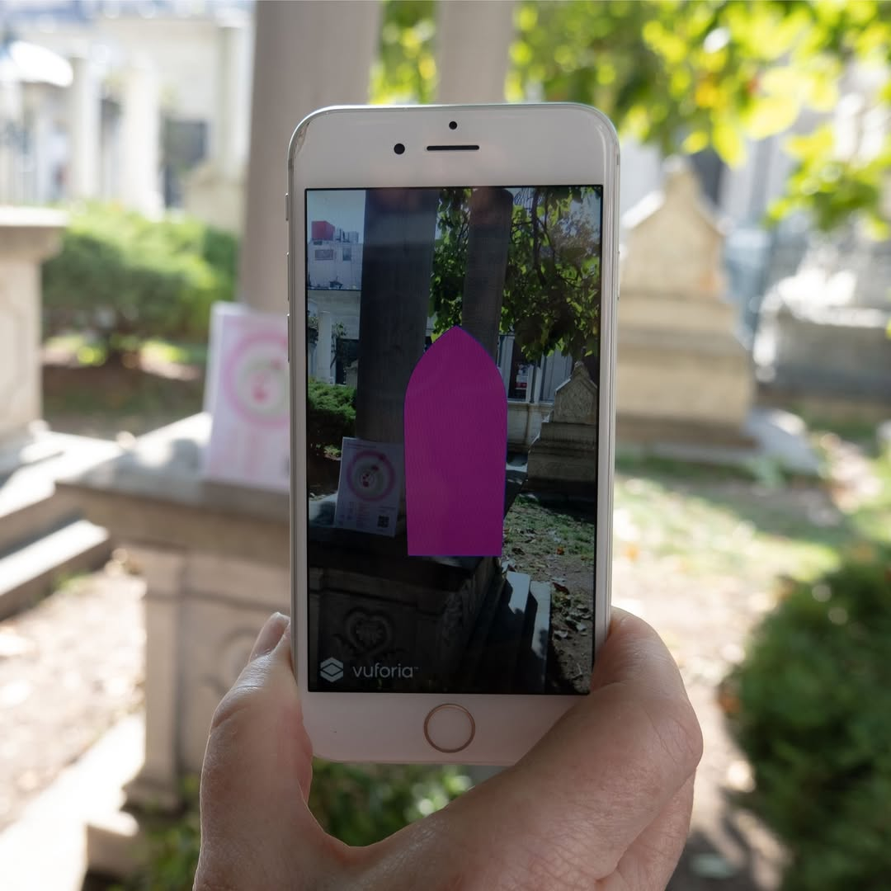
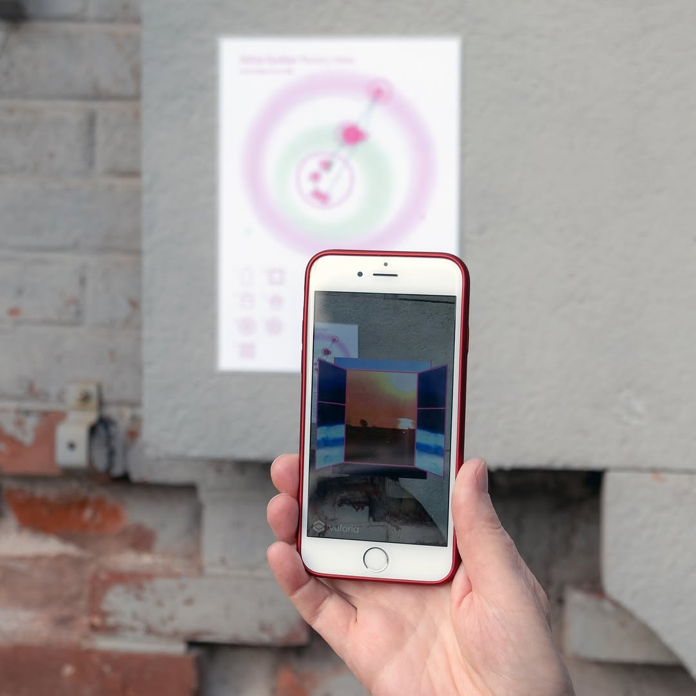
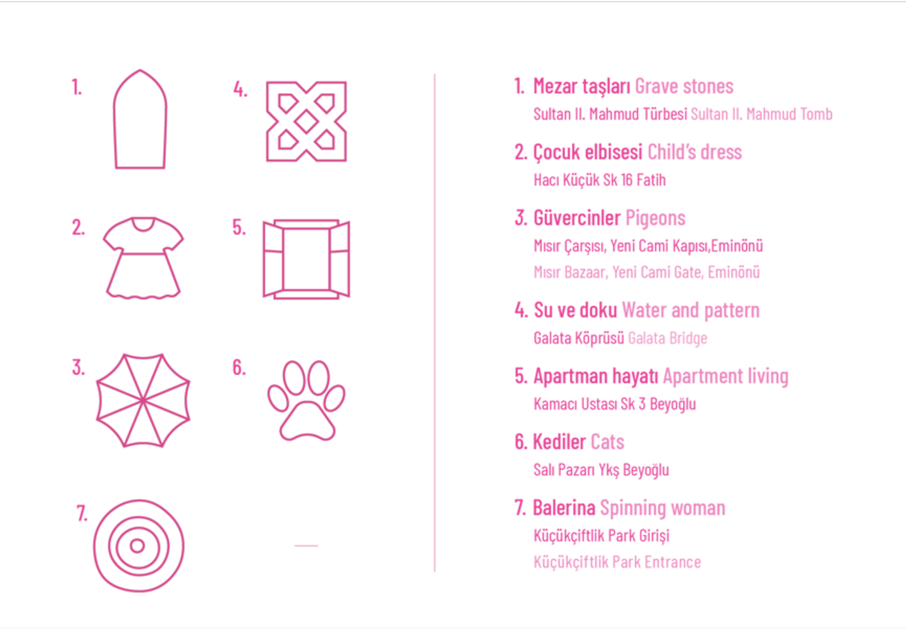
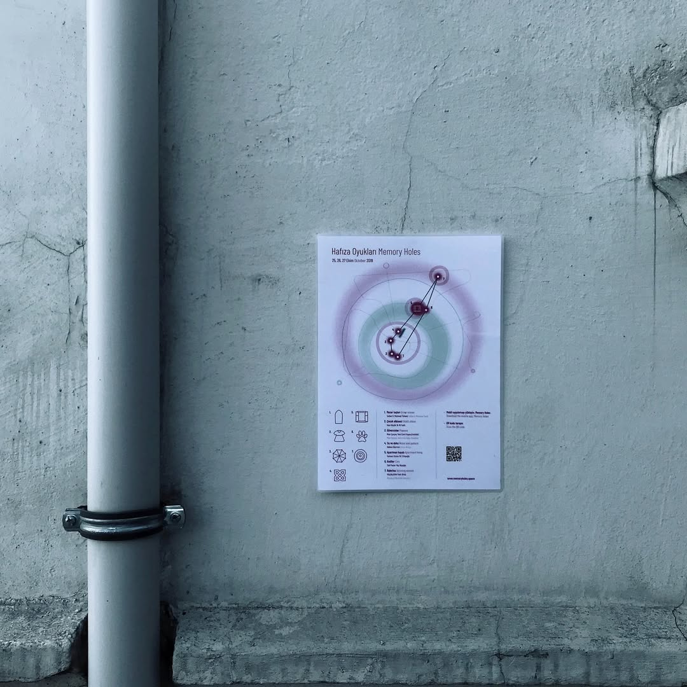
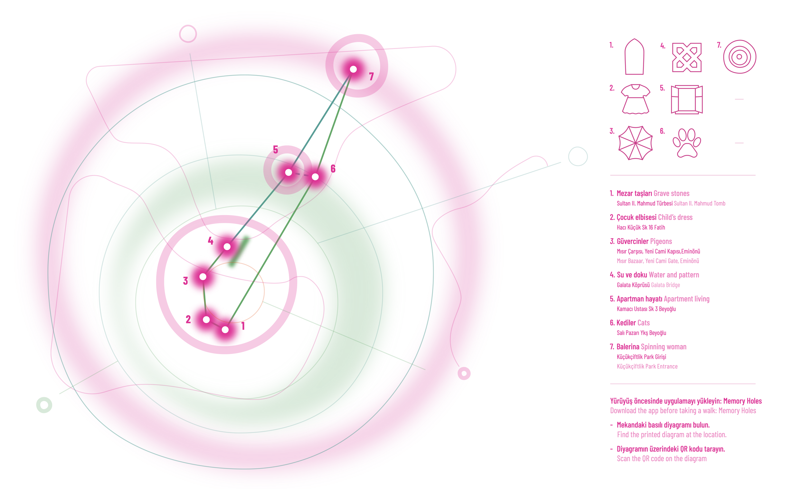

An App-Based Participatory Artwork on Digital Memory, Amnesia, and Disappearance
Developed with Lynn Marie Kirby, Merve Çaşkurlu and Yasha Jain





The multilayered city of Istanbul is our site. It is a city linked by water, people, patterns, cats, birds, and, as with all cities, the presence of death.
Time leaves its imprint on a city and in our memories. The past is lodged in the present and the future is in the past. Temporal experience can be a kind of wormhole; in cities change is always evident. Istanbul is in the process of irreversible change as more and more people pass through the city leaving the residue of their presence.
I developed the AR app in Unity called "Memory Holes". It takes Hi8 video footage shot in 1994 at ordinary sites around Istanbul and explores seven moments that travel from the past to the present—and back again. The AR app markers were placed around the city in various locations and people could see use them to have a glimpse in the past.
Projected through site-inspired icons specific to each location, this original early video footage now floats through our phones in augmented reality, into the site today—and hovers there. Might these dematerialized artifacts be possible echoes of future fossils?